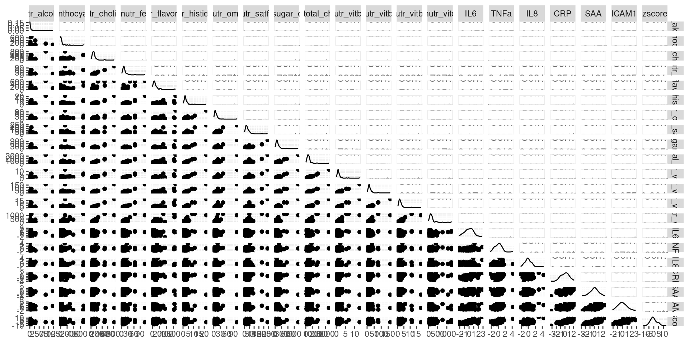
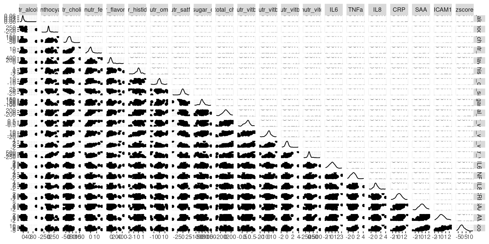
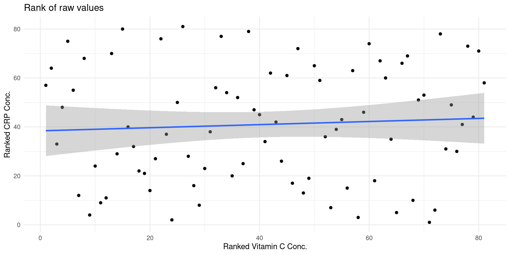
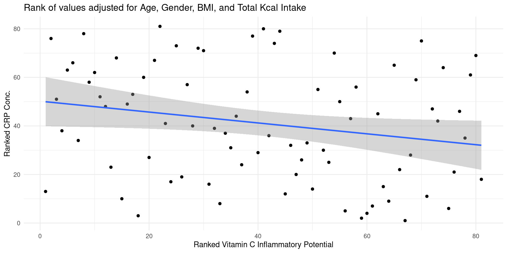
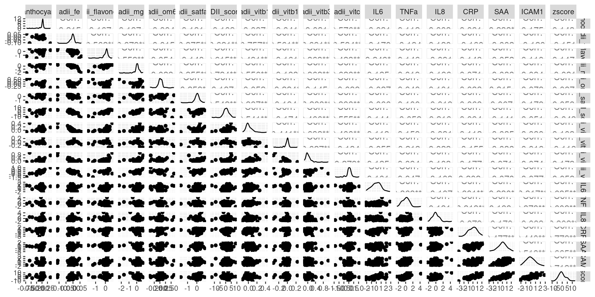
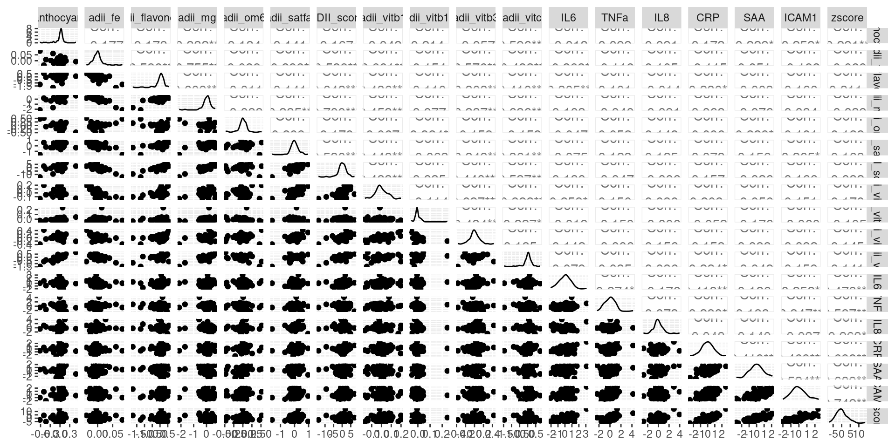
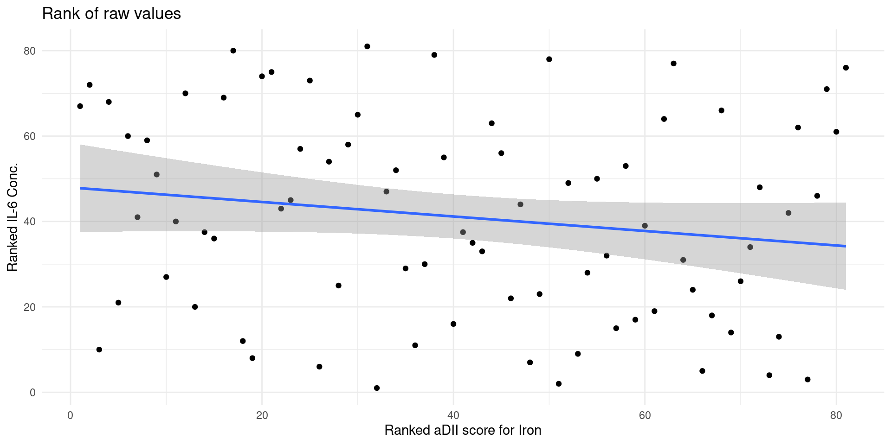
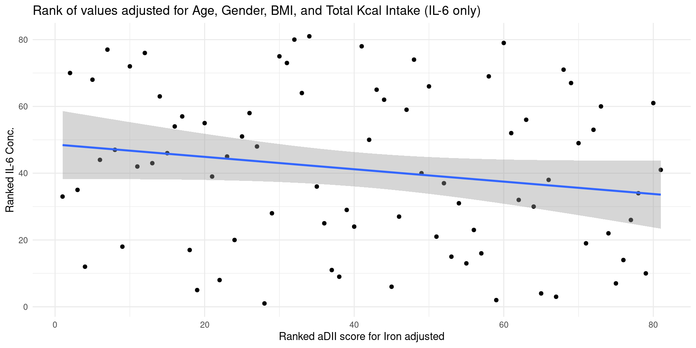

Last updated: 2024-08-04
Checks: 7 0
Knit directory: MMD_Analysis/
This reproducible R Markdown analysis was created with workflowr (version 1.7.1). The Checks tab describes the reproducibility checks that were applied when the results were created. The Past versions tab lists the development history.
Great! Since the R Markdown file has been committed to the Git repository, you know the exact version of the code that produced these results.
Great job! The global environment was empty. Objects defined in the global environment can affect the analysis in your R Markdown file in unknown ways. For reproduciblity it’s best to always run the code in an empty environment.
The command set.seed(20240804) was run prior to running
the code in the R Markdown file. Setting a seed ensures that any results
that rely on randomness, e.g. subsampling or permutations, are
reproducible.
Great job! Recording the operating system, R version, and package versions is critical for reproducibility.
Nice! There were no cached chunks for this analysis, so you can be confident that you successfully produced the results during this run.
Great job! Using relative paths to the files within your workflowr project makes it easier to run your code on other machines.
Great! You are using Git for version control. Tracking code development and connecting the code version to the results is critical for reproducibility.
The results in this page were generated with repository version f07357e. See the Past versions tab to see a history of the changes made to the R Markdown and HTML files.
Note that you need to be careful to ensure that all relevant files for
the analysis have been committed to Git prior to generating the results
(you can use wflow_publish or
wflow_git_commit). workflowr only checks the R Markdown
file, but you know if there are other scripts or data files that it
depends on. Below is the status of the Git repository when the results
were generated:
Ignored files:
Ignored: .Rproj.user/
Untracked files:
Untracked: data/Dietary_Object.RData
Untracked: data/Metadata.RData
Untracked: data/Robjects/
Untracked: data/biomarkers.RData
Unstaged changes:
Modified: analysis/_site.yml
Note that any generated files, e.g. HTML, png, CSS, etc., are not included in this status report because it is ok for generated content to have uncommitted changes.
These are the previous versions of the repository in which changes were
made to the R Markdown (analysis/linear_models.Rmd) and
HTML (docs/linear_models.html) files. If you’ve configured
a remote Git repository (see ?wflow_git_remote), click on
the hyperlinks in the table below to view the files as they were in that
past version.
| File | Version | Author | Date | Message |
|---|---|---|---|---|
| html | 83888c9 | GGalazzoIP | 2024-08-04 | Build site. |
| Rmd | 0566093 | GGalazzoIP | 2024-08-04 | wflow_publish("analysis/linear_models.Rmd") |
| html | 173a6e4 | GGalazzoIP | 2024-08-04 | Build site. |
| Rmd | b71bf66 | GGalazzoIP | 2024-08-04 | wflow_publish("analysis/linear_models.Rmd") |
In this section, we investigate in more details the correlations observed in the previous section. The regression models presented here aim to acquire a deeper understanding of the impact of dietary nutrients on low-grade inflammation markers. Finally, we will directly test how much the levels of low-grade inflammation, measured as the Inflammatory Z-score, are affected by the alternate dietary Inflammatory Index (aDII) score, which measures its inflammatory “potential.”
Plotting the different variables against one another is a good way to see what we can expect from the models.
The plot below summarise the pairwise relationships between the intake of nutrients identified in the correlation analysis and the inflammatory markers.
The lower half display scatterplots, the upper half display the Spearman’s correlation coefficient together with the star-coded unadjusted statistical significance.Finally, the diagonal shows the probability density function of the values of the variable.

| Version | Author | Date |
|---|---|---|
| 173a6e4 | GGalazzoIP | 2024-08-04 |
Looking only at the scatter plots of the nutrient intake against the inflammation markers we cannot see clear trends.

| Version | Author | Date |
|---|---|---|
| 173a6e4 | GGalazzoIP | 2024-08-04 |
`geom_smooth()` using formula = 'y ~ x'
| Version | Author | Date |
|---|---|---|
| 173a6e4 | GGalazzoIP | 2024-08-04 |
`geom_smooth()` using formula = 'y ~ x'
| Version | Author | Date |
|---|---|---|
| 173a6e4 | GGalazzoIP | 2024-08-04 |
We can observe a clear change in the slope of the regression line before and after adjusting for confounding factors. This would suggest that an anti inflammatory effect of the Vitamin C on CRP that is masked by effect of aging on obesity status.
Nonetheless, the gray band that identify the 95% confidence interval can contain an horizontal line. This, confirms the results observed in the correlation analysis, suggesting that we cannot exclude that result might be a false positive.

| Version | Author | Date |
|---|---|---|
| 173a6e4 | GGalazzoIP | 2024-08-04 |
As for the previous panel, an observation of the scatter plots of the aDII score and its components against the inflammation markers does not reveal any clear trend.

| Version | Author | Date |
|---|---|---|
| 173a6e4 | GGalazzoIP | 2024-08-04 |
`geom_smooth()` using formula = 'y ~ x'
| Version | Author | Date |
|---|---|---|
| 173a6e4 | GGalazzoIP | 2024-08-04 |
`geom_smooth()` using formula = 'y ~ x'
| Version | Author | Date |
|---|---|---|
| 173a6e4 | GGalazzoIP | 2024-08-04 |
In this case the slope of the regression line does not change before and after sdjusting for confounders but again, the gray area identifying the confidence interval can contain an horizontal line.
Since this observation is confirmed by the confidence intervals of the correlation analysis, we cannot exclude the possibility of a false positive result.
Analysis of Variance Table
Model 1: zscore ~ AGE + GENDER + BMI_C + Total_kcal
Model 2: zscore ~ ADII_score + AGE + GENDER + BMI_C + Total_kcal
Res.Df RSS Df Sum of Sq F Pr(>F)
1 76 951.43
2 75 945.64 1 5.7871 0.459 0.5002Adding the ADII score to the model explain 0.48% of the zscore variability
sessionInfo()R version 4.4.1 (2024-06-14)
Platform: x86_64-pc-linux-gnu
Running under: Ubuntu 22.04.4 LTS
Matrix products: default
BLAS: /usr/lib/x86_64-linux-gnu/openblas-pthread/libblas.so.3
LAPACK: /usr/lib/x86_64-linux-gnu/openblas-pthread/libopenblasp-r0.3.20.so; LAPACK version 3.10.0
locale:
[1] LC_CTYPE=en_GB.UTF-8 LC_NUMERIC=C
[3] LC_TIME=en_GB.UTF-8 LC_COLLATE=en_GB.UTF-8
[5] LC_MONETARY=en_GB.UTF-8 LC_MESSAGES=en_GB.UTF-8
[7] LC_PAPER=en_GB.UTF-8 LC_NAME=C
[9] LC_ADDRESS=C LC_TELEPHONE=C
[11] LC_MEASUREMENT=en_GB.UTF-8 LC_IDENTIFICATION=C
time zone: Europe/Paris
tzcode source: system (glibc)
attached base packages:
[1] stats graphics grDevices utils datasets methods base
other attached packages:
[1] here_1.0.1 GGally_2.2.1.9000 summarytools_1.0.1 ggnewscale_0.4.10
[5] readxl_1.4.3 gridExtra_2.3 ggrepel_0.9.5 ggsci_3.1.0
[9] ggplot2_3.5.1 vegan_2.6-6.1 lattice_0.22-5 permute_0.9-7
[13] reshape2_1.4.4 dplyr_1.1.4 workflowr_1.7.1
loaded via a namespace (and not attached):
[1] tidyselect_1.2.1 farver_2.1.2 fastmap_1.2.0 promises_1.3.0
[5] digest_0.6.36 timechange_0.3.0 lifecycle_1.0.4 cluster_2.1.6
[9] processx_3.8.4 magrittr_2.0.3 compiler_4.4.1 rlang_1.1.4
[13] sass_0.4.9 tools_4.4.1 utf8_1.2.4 yaml_2.3.8
[17] knitr_1.47 labeling_0.4.3 RColorBrewer_1.1-3 plyr_1.8.9
[21] purrr_1.0.2 withr_3.0.0 grid_4.4.1 fansi_1.0.6
[25] git2r_0.33.0 colorspace_2.1-0 scales_1.3.0 MASS_7.3-60.0.1
[29] cli_3.6.3 rmarkdown_2.27 generics_0.1.3 rstudioapi_0.16.0
[33] httr_1.4.7 cachem_1.1.0 pander_0.6.5 stringr_1.5.1
[37] splines_4.4.1 parallel_4.4.1 cellranger_1.1.0 matrixStats_1.3.0
[41] base64enc_0.1-3 vctrs_0.6.5 Matrix_1.6-5 jsonlite_1.8.8
[45] callr_3.7.6 rapportools_1.1 magick_2.8.3 jquerylib_0.1.4
[49] tidyr_1.3.1 glue_1.7.0 ggstats_0.6.0 codetools_0.2-19
[53] ps_1.7.6 lubridate_1.9.3 stringi_1.8.4 gtable_0.3.5
[57] later_1.3.2 munsell_0.5.1 tibble_3.2.1 pillar_1.9.0
[61] htmltools_0.5.8.1 R6_2.5.1 tcltk_4.4.1 rprojroot_2.0.4
[65] evaluate_0.23 highr_0.11 backports_1.5.0 httpuv_1.6.15
[69] pryr_0.1.6 bslib_0.7.0 Rcpp_1.0.12 nlme_3.1-165
[73] checkmate_2.3.1 mgcv_1.9-1 whisker_0.4.1 xfun_0.44
[77] fs_1.6.4 getPass_0.2-4 pkgconfig_2.0.3